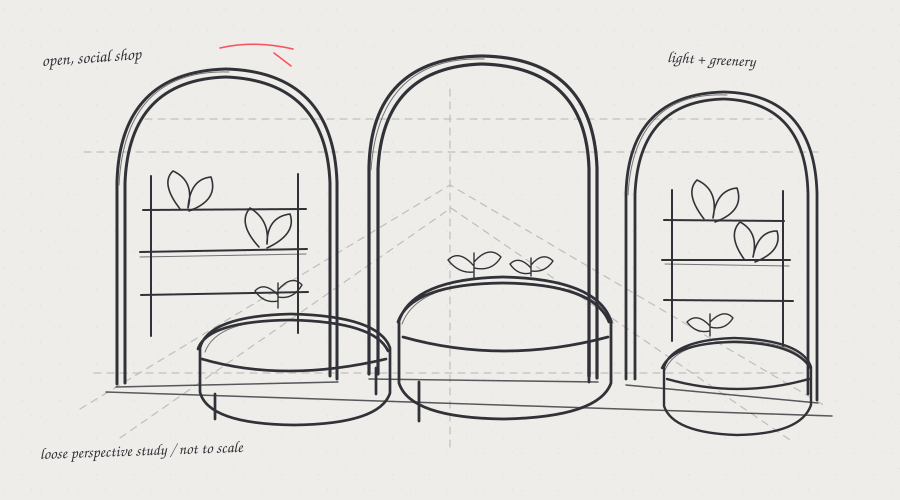
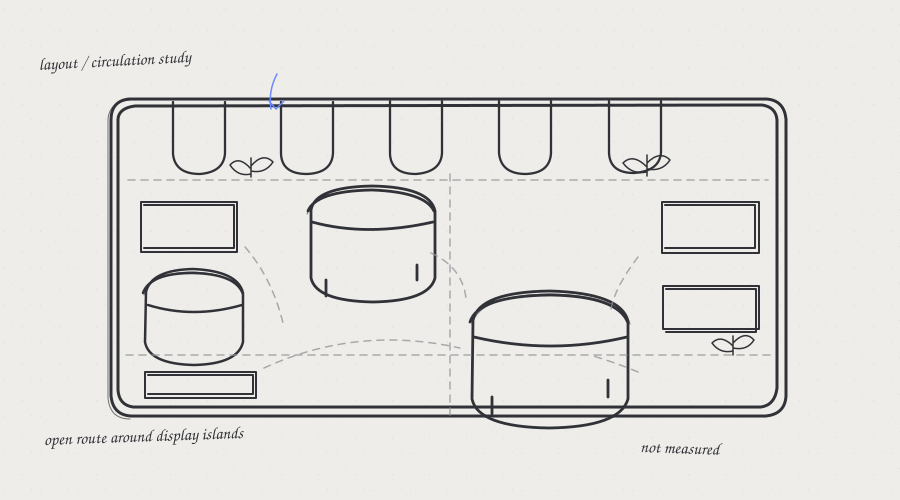
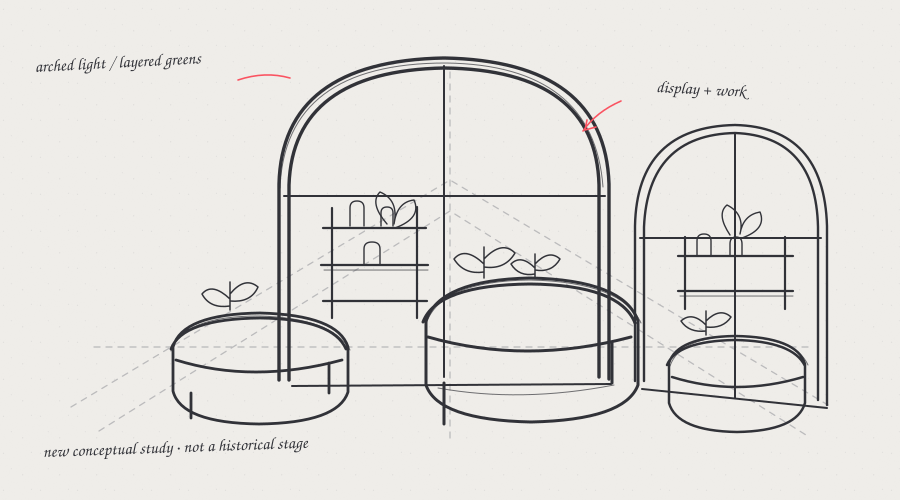

Who uses it
Floral shop staff and visiting customers, as suggested by the project and inspiration image.
02 — 3D ENVIRONMENT
A future floral shop imagined around arched windows, greenery, rounded display islands, and floral work areas.
DESIGN A FUTURE SPACE · PROJECT REVIEW
Proposed brief reconstructed from the supplied inspiration image, final screenshot, and assignment. No fictional characters or interviews are included.
Floral shop staff and visiting customers, as suggested by the project and inspiration image.
Staff arrange flowers at work surfaces while customers browse the displays and talk with staff.
Visible floral displays, practical work areas, greenery, daylight, and room to move among the islands.
No original brief, dimensions, accessibility notes, budget, or material schedule were supplied.
These are proposed requirements connected to the brief. The evidence column describes what is visible in the supplied images; it does not imply that the requirements were formally documented.
Provide work surfaces for arranging flowers, with products and tools within reach.
Inspiration image: staff work at flower-covered counters. Final screenshot: rounded counters and display objects are visible; floral workflow is not shown.Keep browsing routes open around the display islands.
Final screenshot: open floor between islands is visible. Route widths and accessibility clearances are unknown.Make displays easy to see and use daylight across the shop.
Both images show large arched glazing. The inspiration image shows flowers and greenery; the final screenshot does not.Repeated arches, rounded display islands, side shelving, ring fixtures, and wood-look counter panels.
Visible in the supplied final environment screenshot; actual material and lighting settings are not provided.The supplied shop image is used here as inspiration. It shows staff, customers, floral work surfaces, greenery, and arched windows.

Reference image provided for the Social Floral Shop project.

A fresh sketchbook study based on features visible in the supplied inspiration and final images; it is not an original historical sketch.
The supplied inspiration image suggests a social, flower-filled shop. This new conceptual drawing explores arched glazing, greenery, shelving, workstations, and rounded display islands. It is an explanatory illustration made for this portfolio, not a record of an earlier project stage.
No original targeted prompts or revision notes for this project were supplied. The checks below are questions for a future review, not a record of changes already made.

A not-to-scale layout exploration of islands, shelving, work areas, and open paths. It is not an original floor plan.
Only the supplied final still is available; no Blender project file or additional scene views were provided. This checklist follows the assignment and is not a claim that the scene has been reviewed in Blender.

A refined explanatory study of visible forms and useful review questions; not an original sketch or Blender view.
Review circulation around each island and the paths to the work surfaces.
Check arch height, counter scale, and display spacing from multiple still views.
Inspect work surfaces, shelving, and whether each counter supports its intended task.
Confirm the actual wood, stone, glass, and foliage materials in the scene file; the screenshot alone cannot verify shader settings.
Review daylight through the windows and the balance with the circular ceiling fixtures.
Compare clear camera views before considering animation or a walkthrough.

Final environment image supplied for the portfolio.